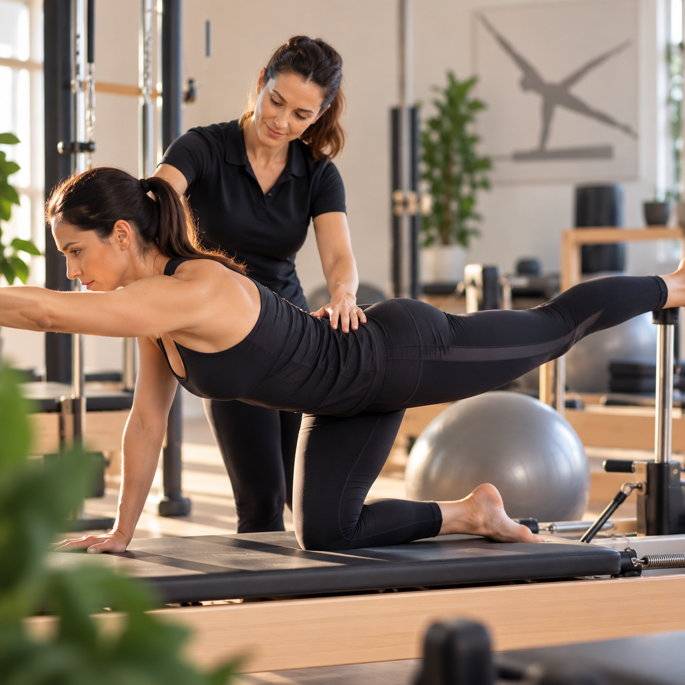
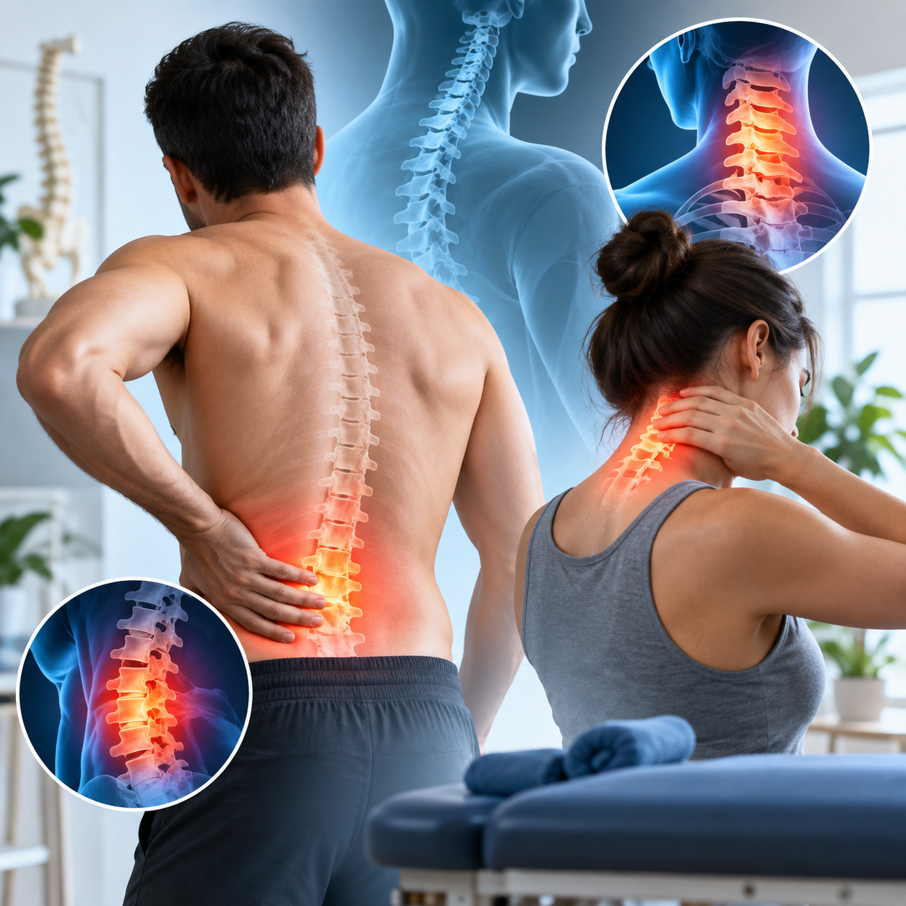
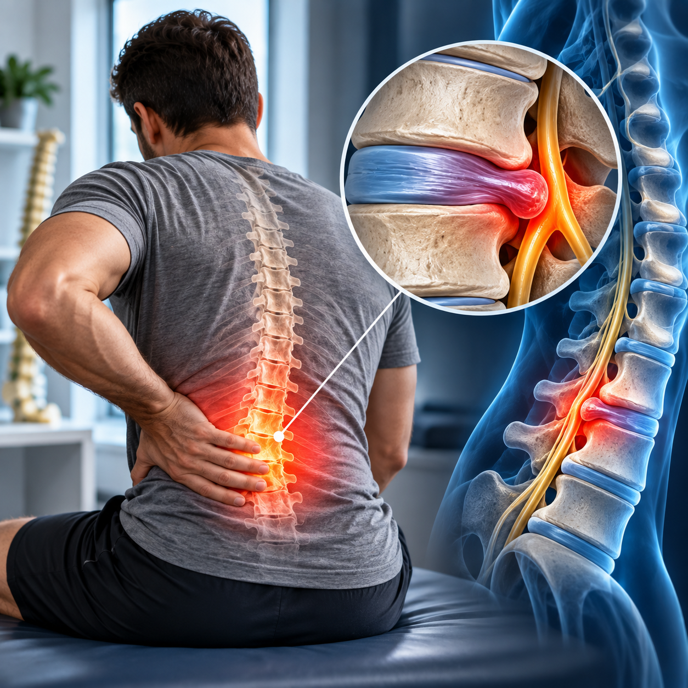
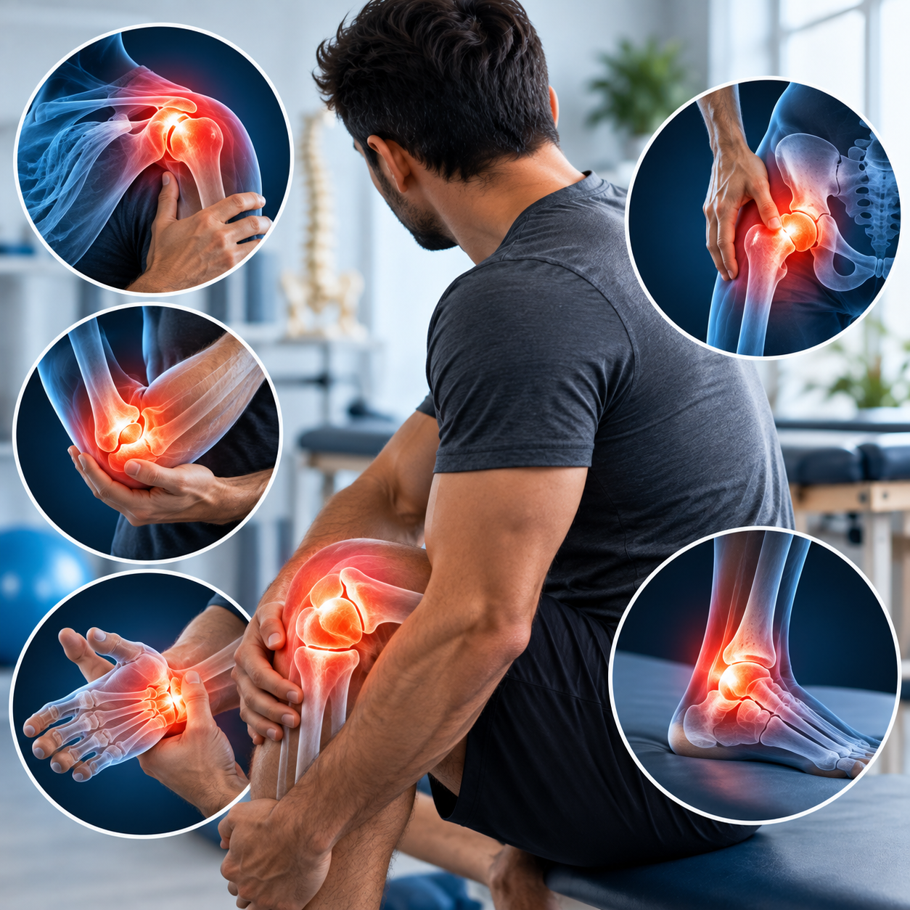
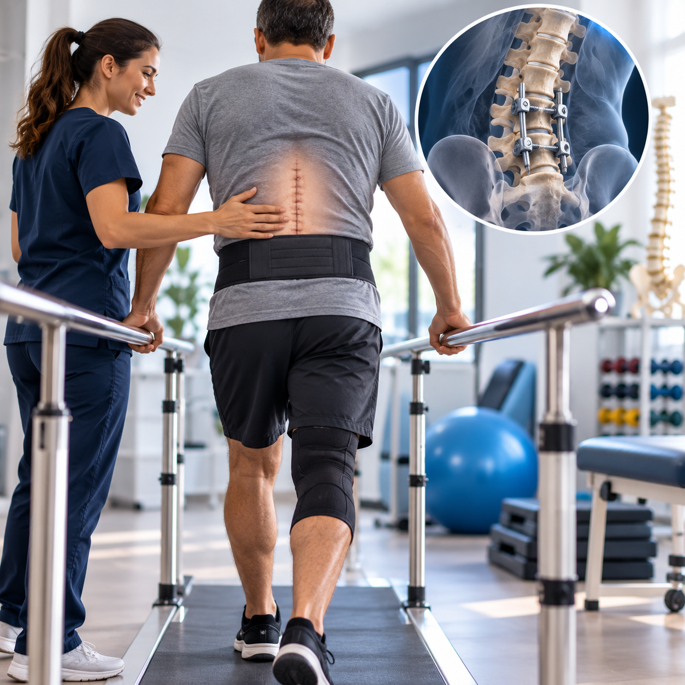
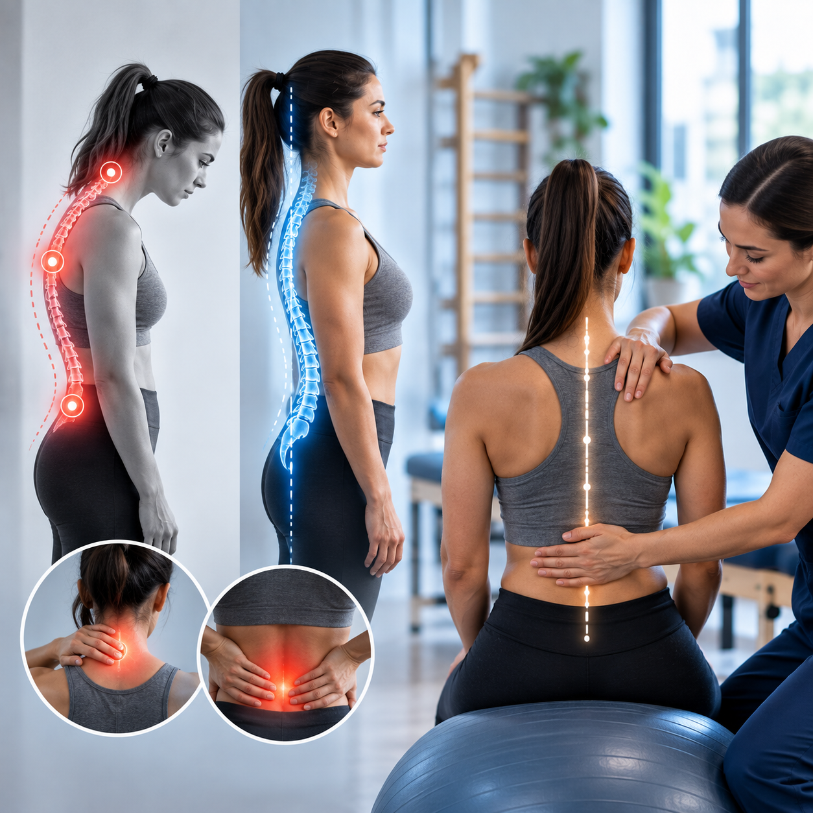
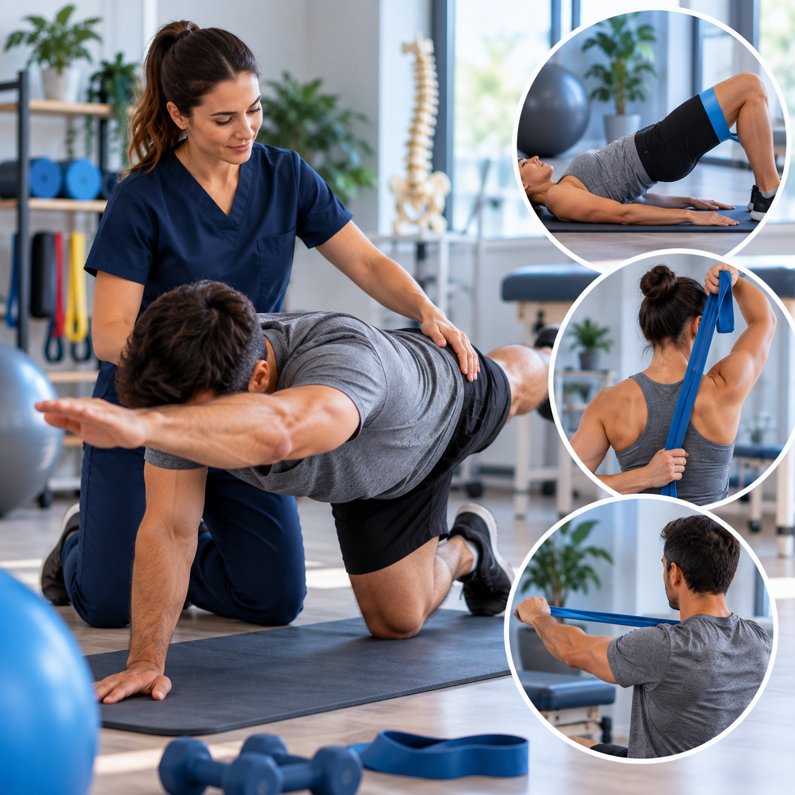

★★★★★
“Gostaria de compartilhar minha excelente experiência com a Dra. Géssica Pereira, osteopata. Desde a primeira consulta, fui recebido com um…”

AgendarFISIOTERAPIA + PILATES
MAFRA, SANTA CATARINA
Para voltar a fazer
o que faz você feliz.
Cuidado com a coluna, movimento e autonomia.
Começando por você.
A dor mudou sua rotina?
Vamos entender o que seu corpo precisa e construir um caminho de cuidado.
SEU CORPO. SUA HISTÓRIA. SEU RITMO.
Explore as especialidades“Gostaria de compartilhar minha excelente experiência com a Dra. Géssica Pereira, osteopata. Desde a primeira consulta, fui recebido com um…”
“Excelentes profissionais, buscam encontrar o problema e ai oferecem o melhor tratamento, em meu caso após poucas semanas tratando problemas…”
“Profissionais capacitadas da melhor forma para atender os pacientes, atenciosas e excelentes.”

O Pilates tem um lugar especial no cuidado da Clínica Géssyca Pereira: uma prática de baixo impacto, orientada e adaptada às suas necessidades, para levar mais qualidade de movimento à sua rotina.
Seja para começar a se exercitar ou continuar ativo, o primeiro passo é conhecer seu corpo e seus objetivos em uma avaliação individual.
Quero começar no Pilates Converse com a equipe sobre horários e atendimento.Exercícios para desenvolver a musculatura e a estabilidade nos movimentos do dia a dia.
Trabalhe a amplitude dos movimentos com progressão e respeito aos seus limites.
Pratique coordenação e consciência corporal para se movimentar com mais confiança.
Uma prática que pode ser adaptada à condição de cada pessoa, inclusive na terceira idade, conforme avaliação.
Conheça os tratamentos e como cada um pode ajudar na sua rotina. O primeiro passo é uma avaliação individualizada.

Dores nas costas ou no pescoço podem atrapalhar o trabalho, o sono e os movimentos do dia a dia. A fisioterapia combina exercícios e técnicas manuais, conforme a avaliação, para ajudar no controle da dor e na melhora da mobilidade.
Falar sobre este cuidado
O cuidado é individualizado para quem apresenta dor e limitações relacionadas à hérnia de disco. A reabilitação trabalha força, estabilidade e movimento, respeitando os sintomas e a evolução de cada pessoa.
Falar sobre este cuidado
Dor no ombro, joelho, quadril ou em outras articulações pode dificultar tarefas simples. Avaliamos os movimentos e as limitações para orientar um tratamento voltado à mobilidade, ao fortalecimento e à recuperação da função.
Falar sobre este cuidado
Depois de uma cirurgia, cada etapa da recuperação merece atenção. O acompanhamento ajuda na retomada gradual dos movimentos, da força e das atividades, respeitando a cicatrização e as orientações da equipe de saúde.
Falar sobre este cuidado
Entender como você senta, trabalha e se movimenta faz parte do cuidado. Exercícios e orientações ajudam a desenvolver consciência corporal, mobilidade e força para lidar melhor com as demandas da rotina.
Falar sobre este cuidado
Exercícios escolhidos para suas necessidades, com progressão e orientação profissional. O objetivo é desenvolver força, equilíbrio, coordenação e flexibilidade, apoiando a recuperação e uma rotina mais ativa.
Falar sobre este cuidadoImagens ilustrativas. A indicação depende de avaliação profissional; o tratamento e os resultados variam de pessoa para pessoa.
Escolha o que faz sentido para você.
O plano começa com uma avaliação individual.
O cuidado olha para sua história, seus movimentos e o que você quer voltar a fazer. Terapia manual e exercícios são escolhidos conforme a avaliação.
Dores nas costas, tensão e rigidez cervical podem dificultar trabalhar, dirigir ou descansar. O tratamento busca melhorar a mobilidade e ajudar no controle dos sintomas.
Reabilitação orientada para lidar com a dor e recuperar a função, quando indicada. Os exercícios e a progressão respeitam sua condição e sua resposta ao tratamento.
Cuidado com dores articulares e limitações ao alcançar, caminhar ou subir escadas, com foco na força e nos movimentos importantes para sua rotina.
Retomada gradual dos movimentos e da força após cirurgia, respeitando as orientações da equipe de saúde. Exercícios e orientações também podem ajudar nas demandas posturais do dia a dia.
Uma prática de baixo impacto, com orientação e exercícios adaptados aos seus objetivos. Para levar mais controle e liberdade de movimento para fora da aula.
Trabalhe a musculatura e a estabilidade para os desafios da rotina.
Explore os movimentos com progressão e respeito aos seus limites.
Desenvolva coordenação, controle e atenção à forma de se movimentar.
Levantar da cadeira, caminhar e estar presente nos momentos em família. O cuidado valoriza essas conquistas com exercícios adaptados e acompanhamento.
Trabalhar os músculos envolvidos nas tarefas que fazem parte da sua vida.
Exercitar a estabilidade e o controle corporal ao se movimentar.
Preservar movimentos importantes, respeitando o ritmo de cada pessoa.
A indicação depende de avaliação profissional. O tratamento e os resultados variam de pessoa para pessoa.
Fisioterapeuta e responsável técnica da clínica, Géssyca tem sua atuação voltada à saúde da coluna. O cuidado começa ouvindo sua história e entendendo como a dor e as limitações afetam sua vida.
A partir daí, a equipe constrói um plano individualizado e acompanha sua evolução, ajustando o tratamento conforme suas necessidades.
Responsável técnica · CREFITO SC 252974-F
Conte o que você precisa e combine sua avaliação pelo WhatsApp.
Avaliamos sua história, seus movimentos e seus objetivos.
Você recebe orientação e um plano que acompanha sua evolução.
Respostas sobre Pilates, fisioterapia e os primeiros passos para começar seu acompanhamento.
Tirar outra dúvida no WhatsAppSim. O início deve considerar sua condição, seus objetivos e sua experiência com exercícios. A avaliação ajuda a orientar uma prática adaptada, com progressão no seu ritmo.
A prática orientada trabalha força, flexibilidade, equilíbrio, coordenação e consciência corporal. Os objetivos são definidos conforme suas necessidades e a evolução é individual.
O Pilates pode ser adaptado à terceira idade, conforme avaliação profissional. O cuidado pode ter foco na força, no equilíbrio e na mobilidade necessários para as atividades do dia a dia.
O primeiro passo é uma avaliação. A escolha depende dos sintomas, das limitações e dos seus objetivos. A equipe orienta o cuidado adequado e avalia quando o Pilates pode fazer parte do plano.
A profissional conversa sobre sua história, suas queixas e o que você deseja voltar a fazer. Também avalia seus movimentos para orientar um plano de cuidado individualizado.
Sim. Entre as especialidades da clínica estão o cuidado com dores lombares e cervicais e a reabilitação de pessoas com hérnia de disco. A indicação das técnicas e dos exercícios depende da avaliação de cada caso.
Não há uma quantidade única para todos. A frequência e a duração do acompanhamento dependem da avaliação inicial, dos seus objetivos e da resposta ao tratamento. O plano pode ser ajustado conforme sua evolução.
Entre em contato pelo WhatsApp para consultar horários, valores e informações sobre Pilates ou fisioterapia. A clínica fica em Mafra e atende de segunda a sexta, das 7h às 21h.
Segunda a sexta · 7h às 21h
Traçar rota no Google MapsRua Tenente Ary Rauen, 1567 · Sala 05 · Mafra, SC